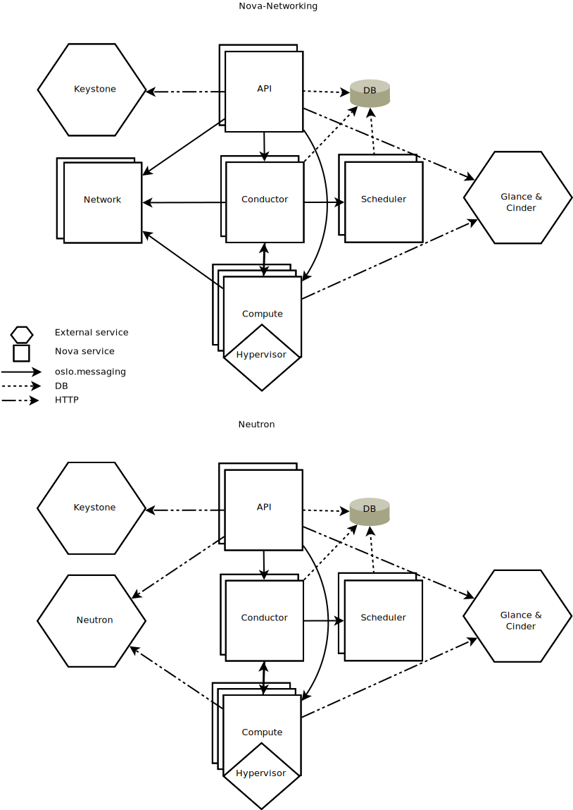

Nova System Architecture¶
Nova is comprised of multiple server processes, each performing different functions. The user-facing interface is a REST API, while internally Nova components communicate via an RPC message passing mechanism.
The API servers process REST requests, which typically involve database reads/writes, optionally sending RPC messages to other Nova services, and generating responses to the REST calls. RPC messaging is done via the oslo.messaging library, an abstraction on top of message queues. Most of the major nova components can be run on multiple servers, and have a manager that is listening for RPC messages. The one major exception is nova-compute, where a single process runs on the hypervisor it is managing (except when using the VMware or Ironic drivers). The manager also, optionally, has periodic tasks. For more details on our RPC system, please see: AMQP and Nova
Nova also uses a central database that is (logically) shared between all components. However, to aid upgrade, the DB is accessed through an object layer that ensures an upgraded control plane can still communicate with a nova-compute running the previous release. To make this possible nova-compute proxies DB requests over RPC to a central manager called nova-conductor
To horizontally expand Nova deployments, we have a deployment sharding concept called cells. For more information please see: Cells
Components¶
Below you will find a helpful explanation of the key components of a typical (non-cells v1) Nova deployment.
{kind=link}
- DB: sql database for data storage.
- API: component that receives HTTP requests, converts commands and communicates with other components via the oslo.messaging queue or HTTP
- Scheduler: decides which host gets each instance
- Network: manages ip forwarding, bridges, and vlans
- Compute: manages communication with hypervisor and virtual machines.
- Conductor: handles requests that need coordination(build/resize), acts as a database proxy, or handles object conversions.
While all services are designed to be horizontally scalable, you should have significantly more computes then anything else.